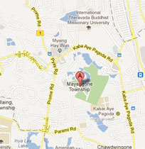

"Next Myanmar Tours" is a private Myanmar tour operator and travel agent. We have more than 18 year's experiences in tourism Industry. "My Way Business and Languages Center" is our sister company. So, All Our staff are polite, knowledgeable, well-trained and have strong motivation in Tourism. And we have several tourist guides who can speak English, Japanese, Chinese, Thai, French, Italian, German, Spanish and Russian. All tourist guides are licensed tour guide from Ministry of Hotel and Tourism.
very year, we offer some foods, exercise books and text books to primary school students who are very poor and also the live in rural area. And sometime, we arrange some special events for our clients in their trip such as offering some clothes, sweets, perfumes and toys for children. We participate these events in our society named as "White Lotus Myanmar". This is one part of donation from our profit.
Kyaing Tone is a capital of Eastern Shan State. It can reach by flight from Heho and Mandalay. But, there is a one of the border town; name "Thachilaik" ...
One of the amazing places in Myanmar. Inle Lake is second largest Lake in Myanmar. It is situated above 890m above sea level. There are more than 200 ...
Yangon is a largest city in Myanmar. There are more than 6 millions who are living in Yangon. According to History, Yangon was built by King Alongpaya in 1755 ...
No. 614, Building (B), Muditar Housing, Mayangone P.O (11061), Yangon, Myanmar.
Tel: (+95) 09-3113-5056
Tel: (+95) 09-4303-2118
Fax: (+95) 09-7313 5664
E-mail: info@nextmyanmartours.com
sales@nextmyanmartours.com
Website: www.nextmyanmartours.com
Skype: next.myanmar
